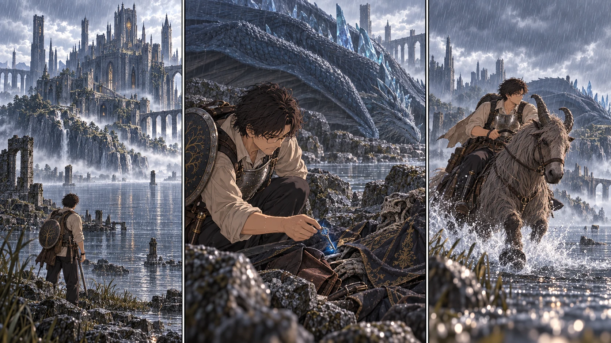

DAY47｜竜を倒さず、扉を開く鍵を。

【DAY47・朝｜攻略サイト先読み】雨音の下で、先生は手帳を開いた。割符は揃っている。学院を通らず昇降機へ向かう道もある。それでも王都へ進む通常の条件には、二つの大ルーンが要る。手元にあるのは、ゴドリックから得た一つ。「だったら、次はレナラだ。竜は倒さない。今日は、鍵だけを取りに行く」
先読みには、学院西の岩場、眠る輝石竜、その背後の遺体、とあった。先生は位置を書き写してから、別の行に「現地未確認」と添えた。颯から借りる指笛は、今日も返す約束で受け取る。結衣には、日没までに戻らなければ連絡と予備の祝福による救出に移ることを、もう一度確認した。
【湖の道｜花の視点】探索二隊は小部屋まで既登録の祝福を使い、そこから湖へ徒歩で下った。先生だけが先へ出る。花は弓を握ったまま、雨で輪郭を失う騎影を見送った。射程の外まで弓を向けたところで、守れるわけではない。今できることは、帰ってくる道を塞がせないことだった。二隊は既知の門前町と南門への道を確かめ、止まれる石陰と隊列を戻せる場所を記録する。竜の岩場までは近づかない。
【学院の西｜眠るもの】岩だと思ったものが、呼吸をしていた。青緑の鱗を雨が流れ、翼の付け根がゆっくり上下する。先生は遠くで一度止まり、岩場へ寄る道と、湖へ抜ける道を見比べた。手帳の記述は合っている。だからといって、足元の水たまりまで書かれているわけではない。最後の距離は馬を降り、盾が石に当たらないよう押さえて進んだ。
遺体の指のそばに、小さな青い光があった。鍵を拾い、確かに握った瞬間、背後で鱗の擦れる音がした。振り返って確かめたい。もう少しだけ観察すれば、竜の戦い方まで分かるかもしれない。その欲を切って、先生は岩陰へ戻った。指笛。現れたトレントへ飛び乗り、来た道ではなく、先に確かめた広い水際へ駆け出す。剣は抜かなかった。
【離脱】蹄が浅瀬を叩き、冷たい水が膝まで跳ねた。岩場が背後へ小さくなっても、先生は転送を試さなかった。追われている最中に光が応じる保証はない。遮蔽物を挟み、追跡のないことを確かめてから速度を落とす。生きている。鍵もある。今日の成果は、それだけで十分だった。
【南門の外】二隊との合流地点で、先生は鍵を見せた。花がようやく弦から指を離した。雲の上まで重なる学院の尖塔、その下の封印は、こちらへ何も答えない。「外との関わりを断った学院、か」。先読みの一節を思い出しながらも、先生は門と退路を交互に見た。静かだから安全とは決めない。今日は封印を越えず、疲れを持ち込まないうちに帰る。全員が未解放の南門へ飛べるようになったわけでもない。
【教会の二十人】戻った者を待っていたのは、湯気と濡れていない寝床だった。近場の狩りは鹿二頭、足りない食事は買い足し、水は二往復して煮沸した。仕事の合間には槍を揃え、前の者が下がる場所を空ける練習もする。六人の盾槍隊はまだ案の段階だ。大盾が無から増えるわけではないが、手持ちで覚えられる動きはあった。
【18:30｜あと三日】夕食後、先生は颯に指笛を返し、鍵を手帳の脇へ置いた。全員の負傷を確かめて休息を取る。レベルは今日は上がっていない。代わりに、学院へ入るための条件が一つ揃った。「明日は中へ。先に退路、それから先へ進む」。結衣が暦の四十七日目を埋める。赤月まで三日。図書館まで辿り着けるかは、まだ誰にも分からなかった。
【判定記録｜事前条件固定・各一回】天候2＋2＝4（雨）。先生の鍵回収5＋2＋補正3＝10（取得・非交戦離脱）。探索隊の退路確認6＋3＋補正3＝12。教会の調達3＋4＋補正3＝10。新たな負傷・死亡なし。戦闘で倒した竜はいない。
保存されたダイス
| 判定 | 出目 | 補正 | 合計 |
|---|
| 天候 | 2 + 2 | 0 | 4 |
| 鍵回収 | 5 + 2 | 3 | 10 |
| 援護退路 | 6 + 3 | 3 | 12 |
| 基地調達 | 3 + 4 | 3 | 10 |
事前条件 / 出目記録 / 原作参照・卓ルール